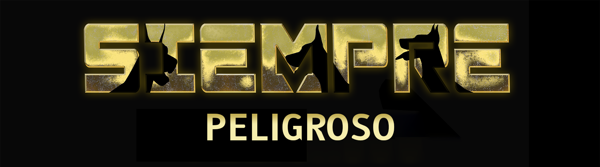

SiemprePeligroso

CountrySerbia FounderNot provided ↓Exploreprogram
01Kennel identity
Breeding
program.
The program layerA kennel record connects breeding identity with every indexed Doberman, litter and documented result.
02Connected profiles
Indexed
Dobermans.
Living kennel networkEach published profile keeps its own evidence and contributes verified lineage, health and results to the kennel record.
03Breeding record
Litters &
lineage.
Stable record chainEach litter connects sire, dam, kennel, puppies and availability through permanent identifiers.
This section is generated only from published litter and offspring records. Missing information remains visibly unclaimed.
Linked litter recordsNo published litter records linked
04Evidence standard
Health,
record by record.
Profile-level evidenceThe kennel view summarizes documented testing while every result remains attached to the individual Doberman.
05Program outcomes
Results &
reach.
Generated from evidenceTitles and working results belong to the Doberman that earned them, then contribute to the kennel overview.
06Visual record
Kennel
archive.
Program + connected recordsEach digital card opens the gallery and movement record of an indexed Doberman.
Living availability
Available
puppies.
Published availability appears here and in the global Puppies index from the same active litter record.
View litter record↑08Profile action
Focused
services.
Index firstRun intelligence and exports from the kennel record, its connected Dobermans and documented evidence.
1→∞